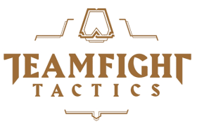

롤 토 체 스

전략적 팀 전투(Teamfight Tactics, TFT 팀파이트 택틱스[*]), 속칭 롤토체스는 라이엇 게임즈가 제작, 배급하는 리그 오브 레전드와 세계관을 공유하는 오토 배틀러 게임이다. 윈도우, 맥OS 버전이 2019년 6월 26일 출시되었고, 이후 2020년 3월 19일 안드로이드, iOS 버전이 출시되었다.(출처:위키백과)
돌아가기